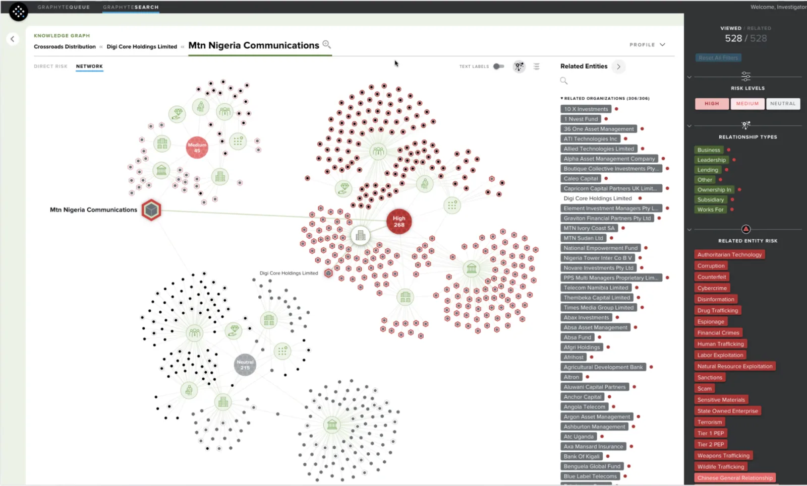
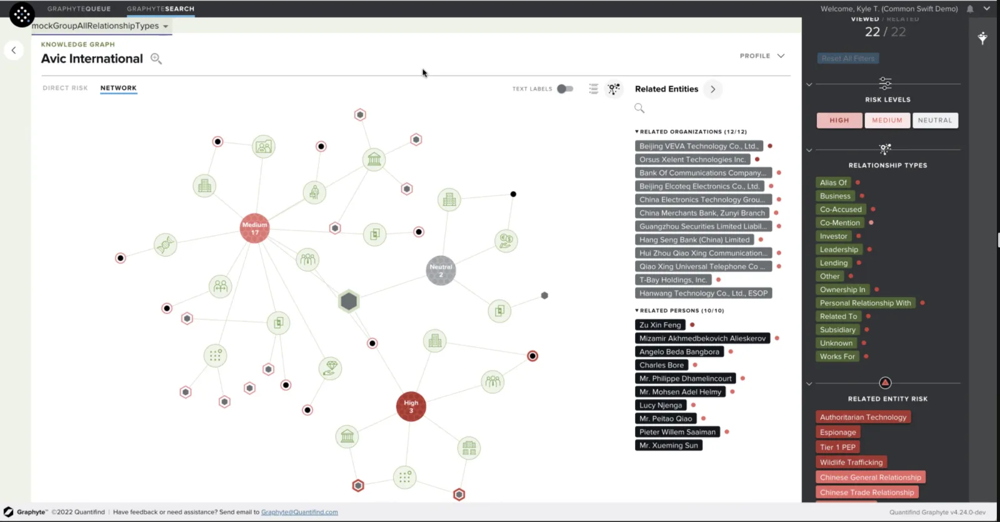
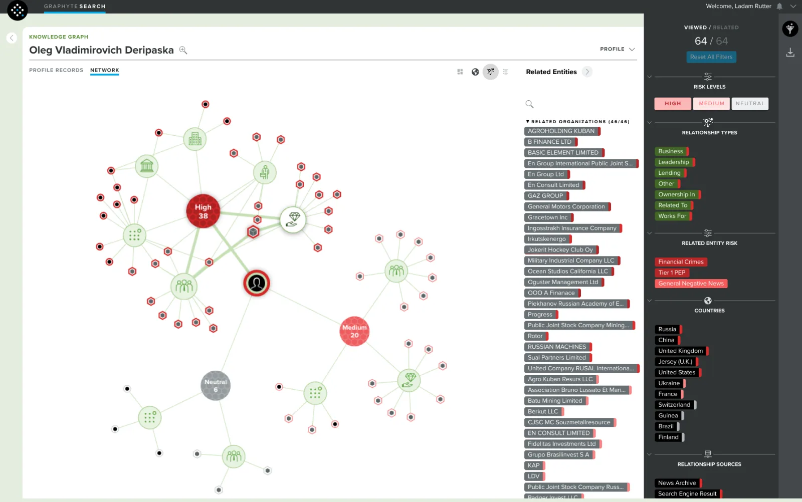

Network Graph: Quantifind
I Designed Network Graph, a node-based network view for Quantifind's GraphyteSearch product. I gathered requirements, created visual comps, built prototypes, chose the animation libraries and wrote JIRA tickets, working with the dev team on daily calls to refine specifications.
Project Overview
The Network Graph was a core visualization feature designed to display the complex web of connections around a subject—individuals, entities, and their relationships. As part of Quantifind’s broader investigative platform, this node-based view became essential for understanding and exploring entity networks in depth.

The Challenge
Quantifind needed a performant, highly customizable graph interface that could support real-time exploration, visual clarity, and integration with other investigative tools. The solution had to be both technically robust and flexible enough to meet the visual and functional needs of analysts.

My Role
I led the technical implementation of the Network Graph, bridging design and development:
Prototype Development:
I collaborated closely with the dev team to build and test early-stage prototypes, helping evaluate various technical approaches.
Library Selection & Integration:
I drove the decision to use a React-based graph library that enabled rapid deployment and deep visual customization.
Custom Canvas Rendering:
Using vanilla JavaScript, I created bespoke canvas-based shapes and visual elements to meet the unique design requirements of the product.
Interaction Design & Communication:
I presented detailed interaction designs to the dev team and played a critical role in aligning design and engineering efforts—ensuring smooth collaboration and a unified product vision.

Impact
This feature was pivotal in securing a 5-year contract with the U.S. Department of Defense, validating both its technical execution and strategic value. The Network Graph has since become a cornerstone in Quantifind’s suite of investigative tools.
↑Back to Top